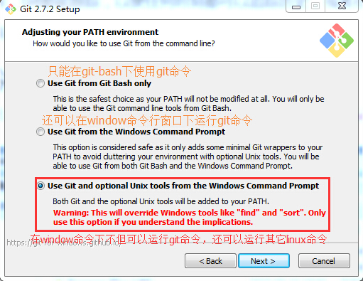
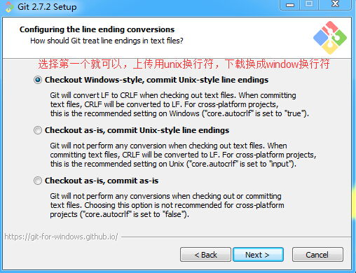
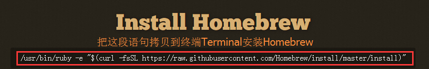

存档，万一挂了还可以从上个存档的地方重玩。历史的记录都没有了，修改的记录也都找不回来了代码是何人在哪个时间添加进去的 移动端等各个终端访问随时随地修改代码,公司没干完的工作回家接着干合作编写一个项目冲突两周时间自己用 C 写了一个分布式版本控制系统，这就是Git下载地址 http://git-scm.com


下载Homebrewhttp://brew.sh

安装xcode会默认下载git
$ git config --global user.name "你的github用户名"
$ git config --global user.email "你的github邮箱"
不配置用户名和邮箱的话无法提交,因为git不知道你是谁
查看配置
$ git config --global user.name
$ git config --global user.email
查看所有配置
$ git config --list
$ git init
通过ls -al命令查看所有文件
工作区
通过git add 添加到暂存区
$ git add '文件名'
暂存区
特点:过渡的作用，避免误操作，保护工作区和历史区，分支处理;
通过git commit 添加到历史区
$ git commit -m"注释内容"
历史区
查看历史状态
$ git log
修改时通过git status查看当前状态
不同区的代码比较
$ git diff
$ git diff --cached（--staged）
$ git diff master
git reset Head "文件名"
$ git checkout "文件名"
有的时候我们希望提交时合并到上一次的提交 git commit --amend
删除暂存区中的内容,并且保证工作区中的内容已经不存在
$ git rm "文件名"
若本地文件存在则不能删除，需要通过-f参数删除
$ git rm --cached "文件名"
$ git checkout commit_id filename 某个文件
$ git reset --hard commit_id
查看当时回滚时的版本
$ git reflog
$ git reset --hard HEAD^
$ git reset --hard HEAD~3
$ git remote add origin "地址"
$ touch .gitignore
$ echo .DS_Store
$ echo node_modules
$ echo .idea
$ git push origin master
$ git remote 查看名字
$ git remote -v 查看地址
$ git fetch
拉取过来手动合并
$ git diff master origin/master
$ git merge origin/master
拉取并合并
git pull
git branch
git branch 创建分支
git checkout a
git checkout -b c切换分支
在master git merge
git checkout b
git branch --merged 合并了哪些分支
git branch --no-merged 合并了哪些分支
git branch -d a 删除分支
git branch -D a 删除分支
git tag v1.0
fork珠峰培训讲师的作业仓库下载到本地上传到自己的github仓库pull request给讲师拉取组长仓库最新代码增加讲师仓库拉取自己的最新代码拉取老师的最新的代码,如果冲突需要解决冲突传到自己的github仓库(如果组长没有要提交的东西可省略)pull request给讲师